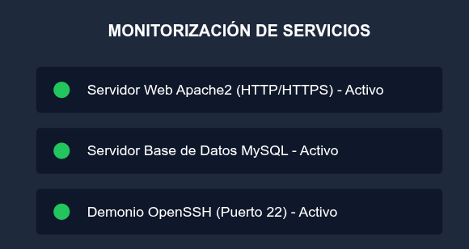

Servicios y Despliegues de Red
Estado de los Servicios Desplegados
Monitorización en tiempo real de los demonios y contenedores en producción:

Guía de Instalación del Servidor Apache en GNU/Linux
-
Actualización de los repositorios del sistema operativo:
- Comando:
sudo apt update && sudo apt upgrade -y - Verificación:
/var/log/apt/history.log
- Comando:
-
Instalación del paquete base y módulos necesarios:
- Comando:
sudo apt install apache2 apache2-utils -y
- Comando:
-
Configuración del sitio web virtual (Virtual Host):
- Ruta de configuración:
/etc/apache2/sites-available/departamento.conf - Ruta raíz de documentos (DocumentRoot):
/var/www/departamento - Activación del sitio:
sudo a2ensite departamento.conf
- Ruta de configuración:
-
Reinicio y validación del demonio:
- Comando:
sudo systemctl restart apache2 - Comprobación de estado:
sudo systemctl status apache2
- Comando:
Buscador Rápido de Servicios e IPs
Direccionamiento IP de las Subredes del Centro
| Nombre de Subred | Dirección de Red | Puerta de Enlace (Gateway) | DNS Principal |
|---|---|---|---|
| Aula de Informática 1 | 192.168.10.0/24 | 192.168.10.1 | 192.168.1.254 |
| Aula de Informática 2 | 192.168.20.0/24 | 192.168.20.1 | 192.168.1.254 |
| Servidores y DMZ | 172.16.0.0/24 | 172.16.0.1 | 8.8.8.8 |
| Administración / Gestión | 192.168.1.0/24 | 192.168.1.1 | 192.168.1.254 |
| Total de subredes activas: 4 subredes enrutadas por firewall perimetral. | |||